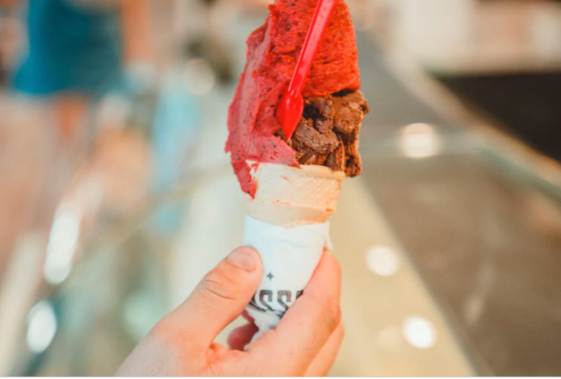
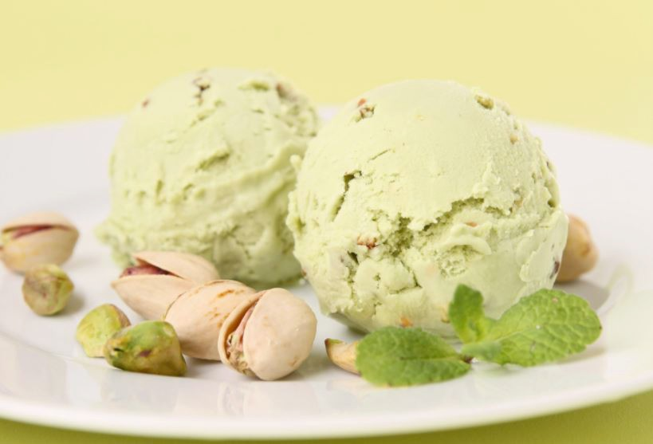
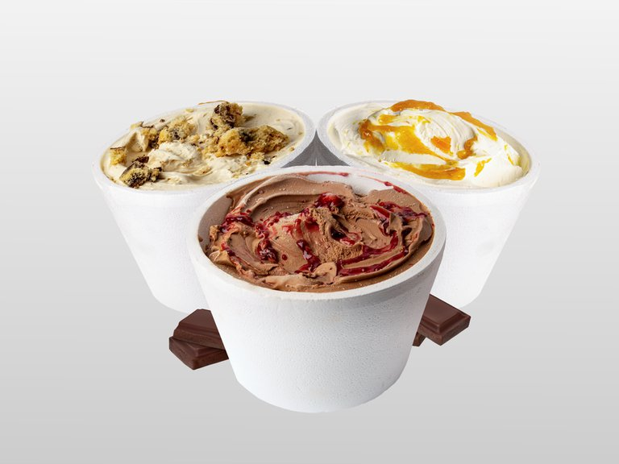
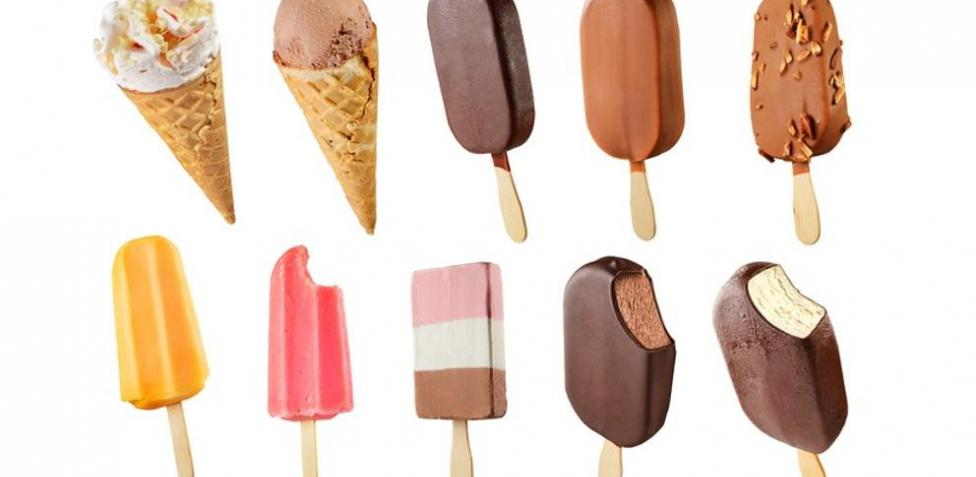

Helados virtuales a US$1000: la primera heladería digital es argentina
La heladería rosarina Gianduia Gelatería lanzó 20 tokens no fungibles, cada uno de ellos con un sabor de helado diferente
Es un helado, se puede comprar y elegir su sabor, pero no se puede comer. En pleno furor de los activos digitales, la cadena rosarina Gianduia Gelatería lanzó su nuevo proyecto Crypto Gelato para que sus clientes puedan comprar helados virtuales a través de NFT (tokens no fungibles) a un valor de 0,4 Ethereum cada uno. A pesar de que en un principio sus dueños no conocían el sistema, la marca apostó por el proyecto y se convirtió en la primera heladería del mundo en comercializar activos digitales a través de sus helados. Para sus creadores, el valor está en “su precedencia y la historia que hay detrás de ese helado virtual”. “Es un cambio de paradigma a nivel mundial. Gianduia tiene como estandarte la innovación, a partir de ahí consideramos y analizamos la factibilidad de la idea, y nos propusimos ser los primeros. Por un lado, para respetar la filosofía de la empresa; y por el otro, para también generarle un valor a todos aquellos fanáticos del helado y de la marca”, sostuvo Juan Ignacio Nassi, uno de los creadores del proyecto. Además de las conocidas criptomonedas, como bitcoin y ethereum, en el mundo de los activos digitales los NFT se volvieron tendencia en los últimos meses. Consisten en piezas coleccionables, de edición limitada, que constituyen una reserva de valor por el mercado de compraventa de estas piezas. Funciona con una lógica similar al de las obras de arte, las estampillas o los discos de vinilo, con la salvedad de que son virtuales. “Podes tener una colección de piezas de arte que son únicas”, comparó Nassi. “Los NFT constituyen una reserva de valor por sí mismos ya que su tecnología los hace únicos, intercambiables, escasos, transparentes e invulnerables. Hay un mercado en crecimiento, con miles de compradores y vendedores, que ya tiene un volumen importante”, explicó el creador del proyecto, quien animó a sus dueños a sumergirse en los activos digitales en busca de seguir innovando. La primera colección que se lanzó cuenta con veinte activos digitales, y cada uno de ellos representa un sabor diferente de helado. Cookies y Cream, Dulce de Leche Rogel, Gianduia, Chessecake, Chocolate Intenso, Snickers, Pistacho, Cabsha, Sambayón al Malbec, Banana Toffee y Lemon Pie, son algunos gustos que se comercializan. Cada helado digital cuesta 0,4 Ethereum que, a valor de mercado, se traducen a unos US$1000. A partir de este martes ya se pueden comprar a través de OpenSea y sus creadores remarcaron que “están inscriptos en la blockchain de Ethereum”. “Hoy fue el lanzamiento, vamos a ver la respuesta de los clientes, en este caso digitales. Si la primera colección tiene éxito, tal vez lancemos paletas u otros productos. Lo que sí le aseguramos a todos los usuarios del mundo es que estos helados son únicos, no se van a volver a repetir. Por ejemplo, una vez vendido el Chessecake, no va a salir nunca más”, señaló Nassi, en diálogo con LA NACION. Desde que arrancó el año los NFT han marcado tendencia y se convirtieron en noticia por sus precios millonarios. Por ejemplo, una semana atrás se vendió el meme “Doge” por US$4.000.000, mientras que en enero de 2021 la obra de arte The First 5000 Days del artista Mike Winkelmann se subastó por más de US$69 millones. Link a la fuente de la nota.
¿Fanático del helado? ¡Enterate de todo en la Ruta del Helado.com!
La dolce fina, la heladería madrileña con 'el mejor helado de pistacho del mundo'
Detrás del nuevo espacio del barrio de Salamanca está un matrimonio de emprendedores y dos maestros heladeros italianos con premios y fama mundial. Su secreto: la materia prima y la técnica.
Dos argentinos emprendedores, dos maestros heladeros italianos, un confinamiento demasiado largo y una pasión. Estos son los cuatro ingredientes que se encuentran en el origen de La dolce fina, la nueva heladería del barrio de Salamanca que nació por Zoom y tiene el mejor helado de pistacho del mundo, ganador de la 'Coppa del Mondo de la Gelateria 2006'. Pilar Artaza, maestra pastelera, empezó a pensar durante aquellas semanas que estuvimos en casa en un negocio que tuviera hueco en el mercado capitalino. Y todos los caminos le llevaron a los helados. "Es parte de la cultura italiana y argentina. Es un plan familiar barato, rico, que se puede tomar sentado o paseando, que gusta a todo el mundo. En nuestro país cuando vas a comer a casa de alguien, llevar helado es un ritual, en verano y en invierno", contaba horas antes de la inauguración. En pleno confinamiento, buceó por internet hasta dar con Sergio Dondoli (68) y Sergio Colalucci (57), dos maestros heladeros con un currículum plagado de premios y reconocimientos internacionales. "El 8 de mayo hicimos una videollamada para contarles el proyecto. Yo no tenía mucha esperanza, pero tenía que intentarlo". Aceptaron casi al instante. Los maestros viajaron a Madrid para supervisar la apertura. "Tendremos unos 28 sabores en la vitrina: avellana, limón, stracciatella, chocolate, vainilla, dulce de leche...", explica Dondoli, cuya Gelateria Dondoli, situada en San Gimignano, en la provincia de Siena, en la Toscana, es lugar de peregrinación para los amantes del helado. "Un buen día vendemos más de mil helados", dice con humildad. Presumen de hacer el "auténtico helado italiano", fresco, con producto de proximidad, con ingredientes naturales, sin aditivos ni conservantes. "En Italia empleamos la leche que dan nuestras vacas", cuenta entusiasmado. Tanto la de Dondoli como la de Colalucci, autor del sabor pistacho 26 -el hit de la casa-, son empresas familiares. "Mi gran desafío ahora es hacer un helado sin ningún tipo de azúcar", explica Colalucci, quien lleva 10 años investigando sobre el tema y toda la vida en el sector. "El helado más complicado es el que no se ha hecho todavía", dice Dondoli entre risas. El pasado octubre, Pilar viajó a la Toscana para formarse con ellos. "Lo más importante es emplear una materia prima de máxima calidad y saber transformar esos productos en helado", comenta. Y de eso el tándem italiano lo sabe casi todo. "En un año llegamos a sacar 70 sabores que vamos rotando", afirma Colalucci. "Hemos llegado a hacer 33 helados de chocolates distintos para un evento". El día de la apertura ya tenían cola en la puerta. "Es un helado diferente a lo que hay aquí", dicen estos italianos que llevan desde hace tiempo su conocimiento a universidades y escuelas de hostelería. "Somos apasionados de lo que hacemos y no paramos de reformular el helado". Ahí están para demostrarlo sus sabores más singulares: como el de vin santo de la Toscana o el de sorbete de pomelo y cava. Link a la fuente de la nota.
¿Sabias que en la seccion RUTA tenemos todas las heladerias de CABA?
Por qué el helado artesanal de chocolate es el protagonista de la temporada
Una investigación de mercado realizada recientemente por AFADHYA indicó que el helado provoca placer, mejora el estado de ánimo y es clave para reducir la ansiedad durante la pandemia. Los chocolates son los sabores más pedidos y se presentan tres variantes innovadoras en más de cien heladerías artesanales del país.
El helado es de esos elegidos que se pueden saborear durante todo el año. Ni el frío, ni la lluvia, ni el viento logran persuadir a quienes tienen en mente deleitarse con una cucharada colmada. Suele ser uno de los mejores compañeros a la hora de ver una película, en charlas con amigos o simplemente como postre. Es por eso que la Asociación de Fabricantes Artesanales de Helados y Afines (AFADHYA) decidió lanzar para la temporada invernal su campaña: “Maestros del Helado de Chocolate”, con la que se prepara para salir a escena presentando tres nuevos sabores: blanco naranja, fondente intenso y rubio cookies. Para los argentinos, el helado es una pasión indescriptible. Un estudio de mercado, llevado adelante por la consultora D’Alessio IROL para AFADHYA, reveló que el 89% lo consumió -al menos una vez- durante la pandemia y que el 85% lo hizo entre abril y mayo. También, quedó claro, una vez más, que los chocolates y las diferentes variedades de dulce de leche continúan ubicándose en el podio. Los encuestados manifestaron, además, que es un producto que mejora su estado de ánimo, reduce la angustia producida por la situación actual, y en su consumo se encuentra la familiaridad y el acompañamiento que hoy se necesita. Desde AFADHYA se inició la campaña “Maestros del Helado de Chocolate” con el objetivo de destacar las cualidades del helado artesanal como un alimento de calidad que otorga felicidad. Y así lo demuestran sus incondicionales seguidores. Para hacerlo, nada mejor que presentar tres sabores de chocolate únicos como el blanco naranja, fondente intenso y rubio cookies. La iniciativa cuenta con la participación de 100 heladerías de todo el país, en las que se podrán degustar estos nuevos sabores. Para conocer las heladerías adheridas, AFADHYA desarrolló el Mapa Interactivo del Helado, con la información de cada una de ellas. Además, el estudio refleja que el helado artesanal mejora el estado de ánimo, brinda un tiempo de paz y tiene un valor muy especial: reducir la angustia que produce la pandemia. En definitiva, el consumidor necesita encontrar la calidad de producto y de atención de siempre (aún en el delivery), porque eso significa encontrar la familiaridad y el acompañamiento que hoy más se necesita. “El Helado Artesanal tiene un consumo cada vez menos estacional y desde AFADHYA lo incentivamos año tras año con nuestras campañas. Ahora estamos viviendo un momento particular por la pandemia y también notamos que el helado es la forma en la que las personas obtienen esa sensación de felicidad en sus casas. El invierno es chocolate, en forma de helado”, manifestó Gabriel Famá, presidente de AFADHYA. ¿Pero qué tienen estos nuevos chocolates artesanales que los convierten en especiales de invierno? El blanco naranja es una combinación de chocolate blanco con variegato de naranjas y escamas de chocolate semiamargo. Por su parte, el fondente Intenso está compuesto por 80% de chocolate fondente, con salsa de frambuesa; mientras que el rubio cookies, tal como lo indica su nombre, es a base de chocolate rubio y galletitas. Las características más valoradas al elegir un helado artesanal: La investigación dejó en claro que a la hora de elegir un helado, el 92% opta por reconocer el sabor de siempre y asegurarse de que sus ingredientes sean naturales; el 87% busca cremosidad; el 85% necesita saber que se está cumpliendo con el protocolo de seguridad y el 59% persigue las promociones. Como conclusión: A la hora de elegir, el 83% de los encuestados reconoce y sabe dónde comprar helado artesanal, y el 64% declaró que durante la pandemia no han cambiado de sitio, ya que, las promociones son un incentivo, pero no toman peso a la hora de la elección. También se observó que las palabras más asociadas por los argentinos a la hora de tomar helado son: placer y dulzura, evidenciando su asociación con sensaciones agradables, con capacidad para reducir el estrés y la angustia de la coyuntura actual. Link a la fuente de la nota.
¿Sabias que el helado se inventó en China? Entra a nuestra seccion de Historia y descubrila.
Del más ligero al que más engorda: este es el ranking de los helados según sus calorías
No lo podemos negar, los helados son una de nuestras mayores debilidades. Además, en verano este fenómeno se multiplica por mil. Con la subida de las temperaturas nada nos apetece más que un refrescante helado de nuestro sabor favorito.
Normalmente es un placer alto en azúcares y en grasa (en sus variantes comerciales) que no goza de muy buena fama, y aunque deberíamos disfrutarlo sin culpabilidad, nunca está más conocer cuántas calorías nos ofrece cada tipo de helado para ser más conscientes de cómo podemos añadirlos a nuestra dieta sin que nuestra salud lo note. Los expertos de Directo al Paladar nos ofrecen toda la información para saber el valor calórico aproximado de cada tipo de helado.Recuerda que si los haces en casa los puedes hacer con menor cantidad de azúcar y unos ingredientes más saludables. 1-Los polos de hielo, los más ligeros: El helado de hielo de toda la vida es el ganador cuando hablamos de un helado con pocas calorías. Esta versión aporta menos calorías que las alternativas a base de crema o leche, ya que casi la totalidad de su contenido es agua. Eso sí, te recomendamos que mires sus ingredientes si lo compras en el supermercado, ya que puede contener muchos aditivos y altas dosis de azúcar. La media calórica de estos helados es de 100 calorías por 100 gramos. Este tipo de helados es muy sencillo de hacer en casa y puedes jugar con diferentes sabores. Seguro que así te ahorrarás mucho azúcar y apostarás por fruta de calidad. 2-El yogur helado, cuidado que engaña: El yogur helado está muy de moda y numeras cadenas apuestan por este tipo de refrescante placer. Una tarrina de tamaño estándar aporta unas 120/130 calorías y una cantidad alta de azúcar, entre 10 y 15 gramos. Eso sí, posee otros nutrientes como grasas y proteínas. Así que tampoco es una opción apta para el día a día pese a que lleve el nombre "yogur". Además, hay que vigilar con los toppings (galletas, chocolate, vainilla…) que pueden multiplicar su valor calórico sin apenas darnos cuenta. 3-Las tarrinas, en la cantidad y los ingredientes está el secreto: Aquí chocamos con un tipo de helado que es complejo de describir en número de calorías, ya que estas dependen del tamaño del envase y de los ingredientes. Asimismo, no podemos valorar igual una variante artesanal de heladería que una versión industrial de venta en supermercados. "Los helados de toda la vida, de heladería y sabores clásicos, suelen tener en torno a 200 y hasta 300 calorías por cada 100 gramos. Estos se elaboran a partir de leche o nata, por lo que tienen un perfil nutricional más completo, con grasas y proteínas; y, aunque tienen también mucha azúcar, suelen llevar algo menos que los helados de marca, también los de hielo", leemos en Directo al Paladar. A todo esto debemos añadir que no es lo mismo un sabor "sencillo" como el de fresa que uno con muchos "extras" como el chocolate con galletas. 4-Los cucuruchos, suma las calorías del helado y de la galleta: Los cucuruchos nos trasladan a nuestra infancia y son los favoritos de pequeños y mayores. Estas opciones, que solemos adquirir en heladerías o supermercados, cuentan con las calorías del helado en crema y las de la galleta o la oblea de la base. "Si solo pedimos una bola de helado de unos 100 gramos, pongamos que de 200 calorías, hay que sumar en torno a 100 del barquillo, lo que nos coloca en unas 300 calorías como poco", apuntan los expertos. En su versión industrial, "un cono pequeño industrial, un Cornetto normal y corriente, es un poco más pequeño tiene 60 gramos: 187 calorías, de las cuales 13 gramos son de azúcar. Ahora si nos vamos a un helado más grande, como el Negritón (también de Frigo), nos vamos a las 331 calorías y los 30 gramos de azúcar". Disfrútalo sin ningún problema, pero ten en cuenta que para el día a día quizás es más aconsejable un helado de hielo. 5-Los bombones helados, una bomba de azúcar: Sean de la marca que sean estos helados cremosos llevan una deliciosa cubierta crujiente y sujetan con un palito de madera. Entre las variantes más populares destacan los almendrados, los de chocolate con lecho o los de chocolate blanco. Son los helados más calóricos de todos, con unas 300 calorías aproximadas por unidad. Además, suelen ser una bomba de azúcar y grasas. En Directo al Paladar apuntan que "un Magnum almendrado, por ejemplo, tiene 334 kcal por 100 gramos (y pesa exactamente esto) y 28,45 gramos de azúcar, que es más de lo recomendado por la OMS al día. Una lata de Coca-Cola normal tiene 35". Link a la fuente de la nota.